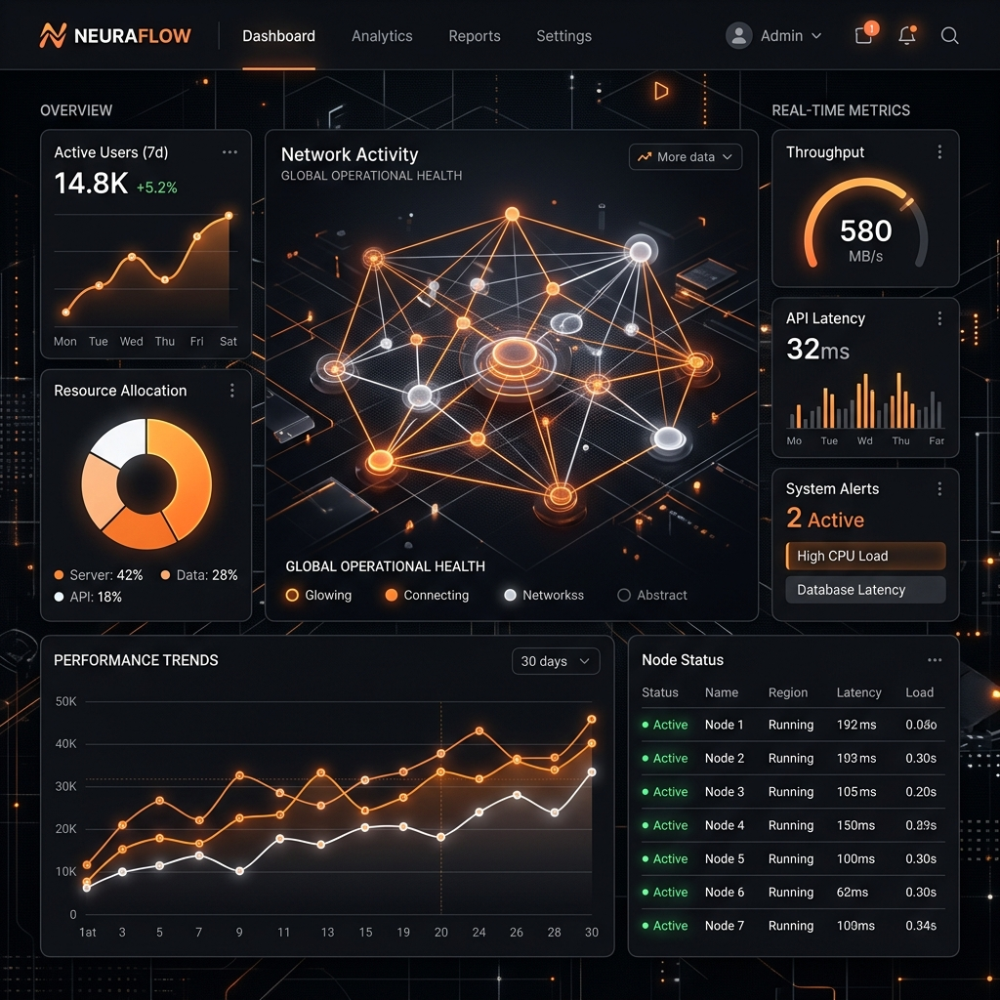

Design & Engenharia Digital
~
Seu próximo cliente
decide em 3 segundos.
Nós projetamos
para isso.
Cada pixel do seu produto comunica algo.
Garantimos que comunique autoridade.
Scroll
Projeto em Destaque
2024

Stack Principal
React
Next.js
Figma
Motion
Especialidades
UI/UX Design
Landing Pages
Sistemas Web
Motion Design
Disponibilidade
Aceitando projetos